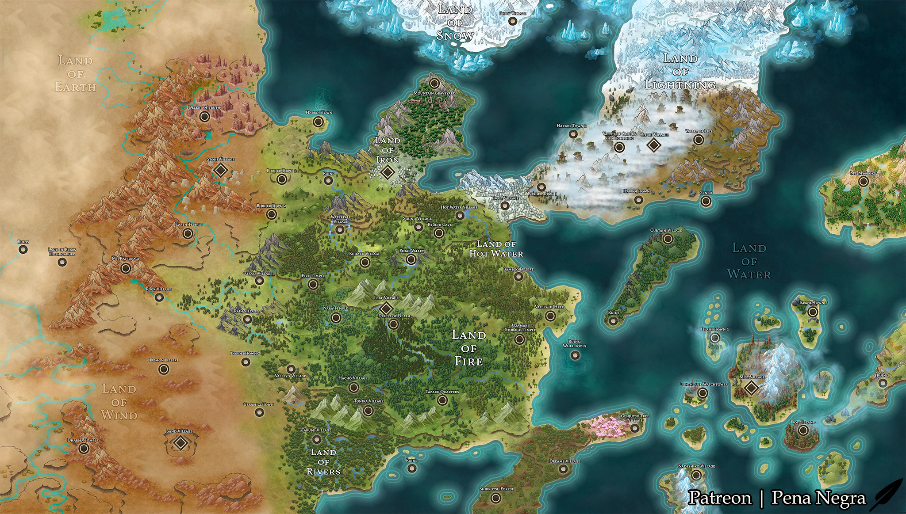

Le pion suit automatiquement ta position dans l’histoire.
Tout ce que tu écris ici guidera l’histoire. Plus tu es précis, plus le Maître du Jeu pourra t’immerger.
Répartis 100 points entre les quatre arts shinobi.
La clé reste dans le localStorage de ce navigateur et n’est envoyée qu’à Google. Ne la publie jamais dans le dépôt.